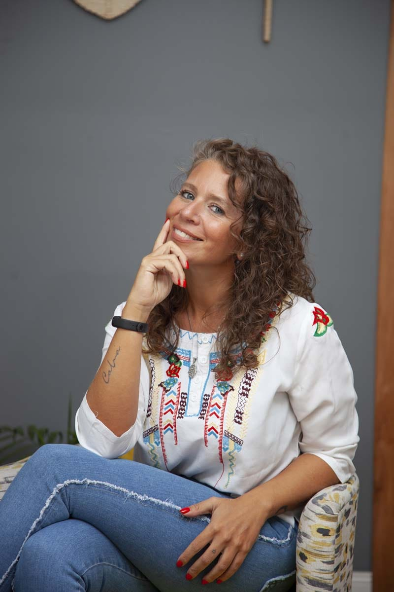
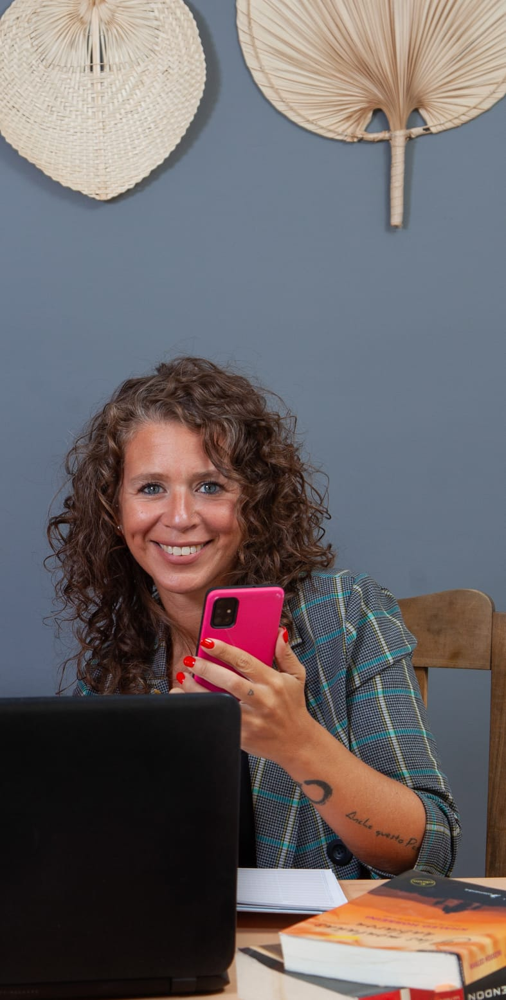
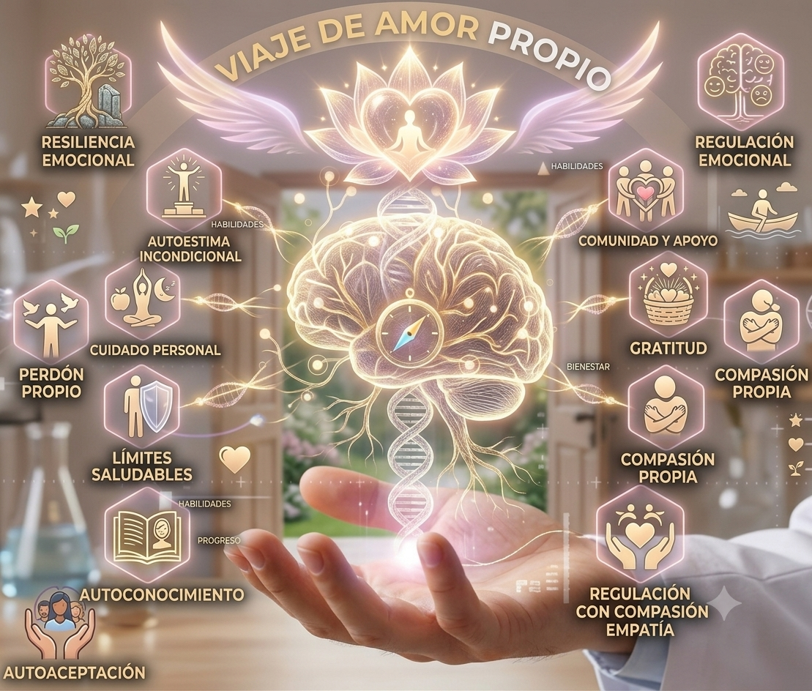

Acompañamiento profesional que une el poder del coaching ontológico con las últimas investigaciones en neurociencias. Para personas y equipos que quieren resultados reales y duraderos.

Reconocer el punto de partida es el primer acto de honestidad con uno mismo.
Tenés claridad de que tu potencial es mayor, pero la distancia entre donde estás y donde querés estar parece imposible de cruzar sola/solo.
Cambiás de trabajo, de pareja, de ciudad... pero los mismos problemas reaparecen. Los patrones se repiten y no entendés por qué.
La autocrítica es constante. El síndrome del impostor aparece justo cuando más lo necesitás. Nunca te sentís merecedor/a de lo que lograste.
Perdiste el propósito o quizás nunca lo encontraste. Cumplís con todo, pero sentís un vacío que no sabés cómo nombrar.
Las demandas no paran. La ansiedad aparece como señal de que algo está desequilibrado, pero no tenés las herramientas para gestionarlo.
Ideas, sueños, metas. Pero la procrastinación, el miedo o la falta de estructura te paralizan antes de dar el primer paso.
La rotación aumenta, el compromiso baja y el clima se deteriora. Sabés que el problema es profundo pero no sabés cómo abordarlo.
Los conflictos se evitan en lugar de resolverse. Las conversaciones importantes no se tienen. Los malentendidos se multiplican.
Excelentes profesionales técnicos que al asumir posiciones de liderazgo no tienen las habilidades para gestionar equipos y emociones.
El equipo trabaja mucho pero los resultados no lo reflejan. Hay algo en la dinámica grupal que frena el rendimiento colectivo.
Cada vez que la empresa intenta transformarse, el equipo se resiste. La gestión del cambio nunca sale bien y la incertidumbre paraliza.
Cada persona trabaja en su silo. Sin confianza, sin colaboración genuina. El equipo funciona como individuos, no como un sistema.
No estás roto/a. No falla el equipo. Lo que falta es metodología probada, el acompañamiento correcto y la decisión de empezar. Para eso estoy.
Quiero dar el primer paso →
"Mi propósito es servir y compartir mi filosofía de vida: conectar con lo que realmente importa, disfrutar los procesos y confiar en una misma."
Soy Coach Ontológica Profesional con Posgrado en Neurociencias, nacida en Río Gallegos, Patagonia Argentina. Acompaño a personas y equipos en todo el país y el mundo.
Hace unos años atravesé mi propio proceso de transformación que me llevó al coaching. Hoy combino la profundidad ontológica con el rigor científico de las neurociencias para acompañar cambios reales: sin fórmulas, con presencia auténtica.
Dos mundos que requieren el mismo ingrediente: personas dispuestas a crecer de verdad.
Si estás en un momento de búsqueda, transición o simplemente querés vivir de forma más plena y auténtica.
Si liderás un equipo, una empresa o un área y querés que las personas den lo mejor de sí mismas.
Cada modalidad está diseñada para diferentes momentos y necesidades. Siempre con metodología y calidez.
Proceso personalizado para encontrar tu propósito, superar bloqueos y vivir de forma más auténtica.
Para líderes y profesionales que quieren potenciar su performance, comunicación y bienestar laboral.
Intervenciones grupales diseñadas a medida para transformar la dinámica de tu equipo u organización.
Programas intensivos que podés hacer a tu ritmo, con metodología ontológica y base en neurociencias.
No todo el coaching es igual. Esto es lo que hace único el proceso con MeryGo.
Metodología que trabaja el lenguaje, las emociones y la biología del cambio a la vez.
Escucha real, sin juicios, desde quien ya atravesó su propia transformación.
El proceso respeta tu tiempo, tu historia y tus posibilidades reales.
Cada sesión incluye compromisos concretos que transforman la realidad cotidiana.
La misma profundidad metodológica para personas y para equipos.
Trabajo organizado que transforma lo simple en algo genuinamente valioso.
El coaching ontológico trabaja con el lenguaje, las emociones y el cuerpo como los tres pilares que determinan cómo interpretamos el mundo y cómo actuamos en él.
Las neurociencias nos explican por qué ciertos patrones se repiten, cómo se forman las creencias y cómo el cerebro puede cambiar con las condiciones adecuadas. Juntos, estos dos marcos te dan herramientas concretas para ser diferente, no solo pensarlo.
"La autenticidad convierte lo imposible en millones de posibilidades. Confiá en lo que sos."— MeryGo. Coach
Programas intensivos con metodología ontológica y base en neurociencias. Desde cualquier lugar del mundo.
6 módulos grabados para transformar tu relación con vos mismo/a. Coaching ontológico + neurociencias. A tu ritmo, con workbook descargable.
Herramientas prácticas para liderar tu vida desde adentro: emociones, creencias, decisiones y acción. Próxima edición en preparación.

Un recorrido por la autocompasión, el merecimiento y la construcción de una relación más amable con vos mismo/a.
Cada transformación empieza con una conversación honesta. Elegí cómo querés conectar con Mery y empecemos juntos.
💬 Escribime por WhatsAppO por email: merygon@gmail.com